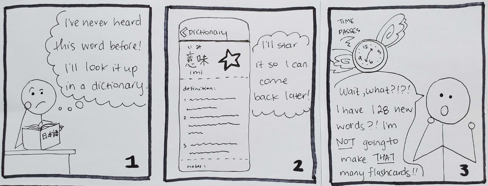
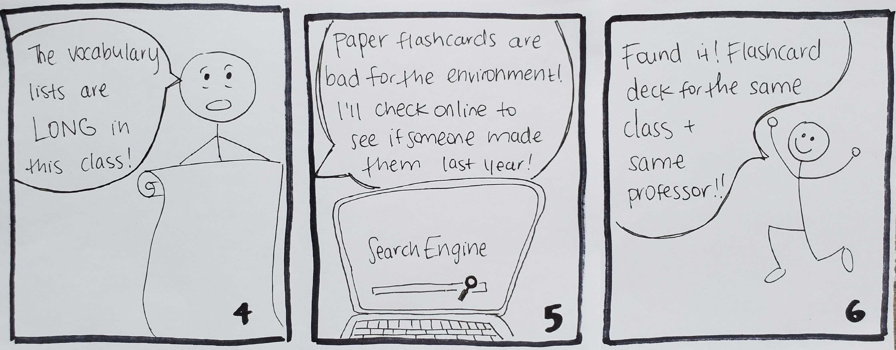
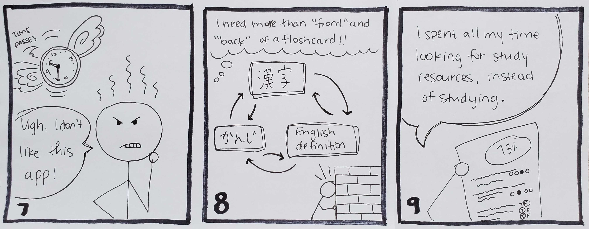

I conducted competitor research and remote ethnographic interviews,
and designed paper prototypes of a Japanese-English dictionary.
I ran usability tests on our low-fidelity and hi-fi prototypes,
as well as our our final product; a dictionary that allows users
to add any word they look up into flashcard decks.
Learning a new language involves looking up new words in a dictionary--- but sometimes students find themselves looking up the same word again and again if they do not learn it. This is particularly difficult for students learning
Japanese. In addition to understanding the english meaning of a given word, they will need to learn the pronunciation of the word as well as the written kanji. Looking up new words in a dictionary can be challenging because there
are
over 2000 kanji and most dictionaries let you look up the kanji by either the pronunciation or by knowing the stroke order of how the character is written.
After looking up the word, students need to learn it: but paper flashcards only have two sides, and digital ones often have the same issue. Besides, why should you need to install another app? If you've downloaded a foreign
language
dictionary, you probably intend to learn the words you're looking up.
I tried using over 25 websites and apps that were dictionaries
or flashcard tools, and charted which features they had.
Most were incredibly similar, but we did find that two dictionary
apps allowed users to make a query and immediately add that word
to a flashcard deck (Tango Master and Akebi), but the first
was only available on the Microsoft phone and the second is
did not allow users to automatically add results from a query
to a deck of flashcards.
Our target audience was high school or university students
enrolled in Japanese language classes.
I conducted five remote ethnographic interviews to understand how
students complete their homework and record new words they come
across outside of the classroom. Based on the interviews,
I created storyboards that show some of students' main
issues when studying Japanese, and a list of requirements
for our solution.



- Search functionality works with English or Japanese writing systems (Kanji, Hiragana, Katakana, or Romaji).
- Recent queries should be shown as history, but users should be able to delete words.
- Search results should appear below the search bar. Each row will contain the english word, kanji element, hiragana/katakana, romaji, as well as other information about the word entry. To the right of each row will be a "+"
button
for adding the word entry to a new or preexisting list.
- Users must sign up for free accounts before they create a vocab list/flashcard deck.
- Users should be able to use a filter to view a list of all public vocab lists and their private lists. Users should be able to delete their private vocab lists. Clicking a list will bring the user to that list’s page.
- Each list’s page will display the words in that list and an edit button. The edit button allows users to delete words. From this page, users should be able to start going through flashcards for the words in the deck.
- Once users have started their flashcards/quiz, users should be able to see the reverse side of the page with the click of a button, and self-report if they got the answer right.
- There should be a "settings" page for each flashcard deck where users can see how often they have been quized on each word, how often they get the answer correct, and how long it took them to get the right answer. Using this
data,
the app should determine which words need to be studied and when.
I created paper prototypes and ran five 15 minute usability
studies where we asked users to look up a word and add it to a
flashcard deck. After a few design tweaks, I created clickable
wireframes using Balsamiq, and. After running
the same study again, we upgraded to a functional
prototype
made in AdobeXd.
My three teammates coded our website and hosted it on AWS
(see our code on GitHub).
Although our professor encouraged us to just use a fake database
with just a few words, I found a set of JSON files that contained over
190,000 words, and I wrote a Python script that created all
of our SQL statements to make a fully functional relational database.
We completed the first seven of our eight requirements -
for the eigth requirement, we completed the backend but ran out
of time to complete the front end. This was important, because
in the real world, we would be successfully saving the data,
and would be able to dislay it when development was completed.
Our stretch goal was to create a algorithm to determine how
often users should be quizzed on their vocabulary words,
how much they should be rewarded for immediately getting an
answer correct, or how many times they need to get it right
before we can take the word off the rotation.
Iterate on design prototypes:
Instead of showing participants one set of prototypes
during initial interviews, I would have preferred to show two
different versions, because people can give better feedback when they
understand what the other options are. However, due to time
constraints, I didn't have time to design a second set of prototypes,
so I used competitor research to inspire my designs.
Have designers do the designing:
This is the first and only mobile website I have ever designed,
and I think that's apparent as you look at my designs!
I'm sure that a different color palette and fonts
would have improved out mobile website. At the time,
I had never used an iPhone, and the rest of my teammates were all
Android users as well, so I didn't catch it when the final prototypes
all had Android back buttons on the bottom of each screen.